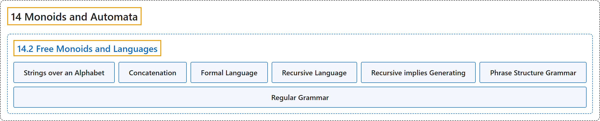

14.2 Free Monoids and Languages
Classification

Glossary
| Term | Definition | 中文翻译 | Source |
|---|---|---|---|
| 14.2 Free Monoids and Languages 自由幺半群与语言 |
(No definition) | （无定义） | Doerr & Levasseur, n.d., section 14.2 |
| Strings over an Alphabet 字母表上的字符串 |
"A string of length \(n\text{,}\) \(n \geqslant 1\) over alphabet \(A\) is a sequence of \(n\) letters from \(A\text{:}\) \(a_1a_2\ldots a_n\text{.}\) The null string, \(\lambda\text{,}\) is defined as the string of length zero containing no letters. The set of strings of length \(n\) over \(A\) is denoted by \(A^n\text{.}\) The set of all strings over \(A\) is denoted \(A^*\text{.}\)" | 字母表 \(A\) 上长度为 \(n\)（\(n \geqslant 1\)）的字符串是 \(A\) 中 \(n\) 个字母的序列：\(a_1a_2\ldots a_n\)。 空串 \(\lambda\)， 定义为长度为零、不含任何字母的字符串。\(A\) 上长度为 \(n\) 的字符串的集合记作 \(A^n\)。 \(A\) 上所有字符串的集合记作 \(A^*\)。 | Doerr & Levasseur, n.d., Definition 14.2.1 |
| Concatenation 连接 |
"Let \(a=a_1a_2\cdots a_m\) and \(b=b_1b_2\cdots b_n\) be strings of length \(m\) and \(n\text{,}\) respectively. The concatenation of \(a\) with \(b\text{,}\) \(a+b\text{,}\) is the string \(a_1a_2\cdots a_mb_1b_2\cdots b_n\) of length \(m+n\text{.}\)" | 设 \(a=a_1a_2\cdots a_m\) 与 \(b=b_1b_2\cdots b_n\) 分别为长度 \(m\) 和 \(n\)， 的字符串。\(a\) 与 \(b\)， 的连接 \(a+b\)， 是长度为 \(m+n\)。 的字符串 \(a_1a_2\cdots a_mb_1b_2\cdots b_n\)。 | Doerr & Levasseur, n.d., Definition 14.2.4 |
| Formal Language 形式语言 |
"If \(A\) is an alphabet, a formal language over \(A\) is a subset of \(A^*\text{.}\)" | 若 \(A\) 是字母表，则 \(A\) 上的形式语言是 \(A^*\)。 的子集。 | Doerr & Levasseur, n.d., Definition 14.2.6 |
| Recursive Language 递归语言 |
"A language is recursive if there exists a recognition algorithm for it." | 若语言存在识别算法，则该语言是递归的。 | Doerr & Levasseur, n.d., Definition 14.2.9 |
| Recursive implies Generating 递归蕴含可生成 |
"If \(A\) is countable, then there exists a generating algorithm for \(A^*\). If \(L\) is a recursive language over a countable alphabet, then there exists a generating algorithm for \(L\)." | 若 \(A\) 是可数的，则存在 \(A^*\) 的生成算法。若 \(L\) 是可数字母表上的递归语言，则存在 \(L\) 的生成算法。 | Doerr & Levasseur, n.d., Theorem 14.2.12 |
| Phrase Structure Grammar 短语结构文法 |
"A phrase structure grammar consists of four components:" | 短语结构文法由四个组成部分构成： | Doerr & Levasseur, n.d., Definition 14.2.15 |
| Regular Grammar 正则文法 |
"A regular (right-hand form) grammar is a grammar whose production rules are all of the form \(A\to t\) and \(A\to tB\text{,}\) where \(A\) and \(B\) are nonterminal and \(t\) is terminal. A left-hand form grammar allows only \(A \to t\) and \(A\to Bt\text{.}\) A language that has a regular phrase structure language is called a regular language." | 正则（右线性形式）文法是产生式规则全部形如 \(A\to t\) 和 \(A\to tB\)， 的文法，其中 \(A\) 和 \(B\) 是非终结符，\(t\) 是终结符。左线性形式文法只允许 \(A \to t\) 和 \(A\to Bt\)。 具有正则短语结构语言的语言称为正则语言。 | Doerr & Levasseur, n.d., Definition 14.2.21 |
References
Doerr, A., & Levasseur, K. (n.d.). Applied discrete structures. Retrieved October 28, 2026, from https://discretemath.org/ads/index-ads.html